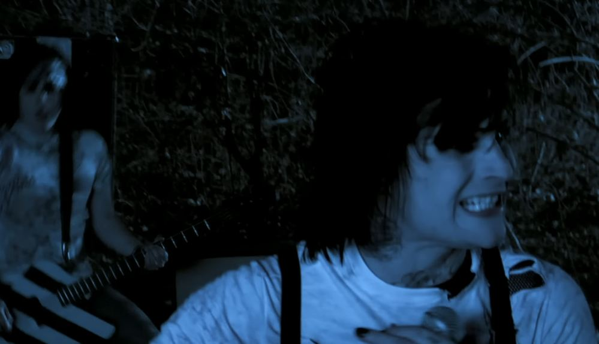
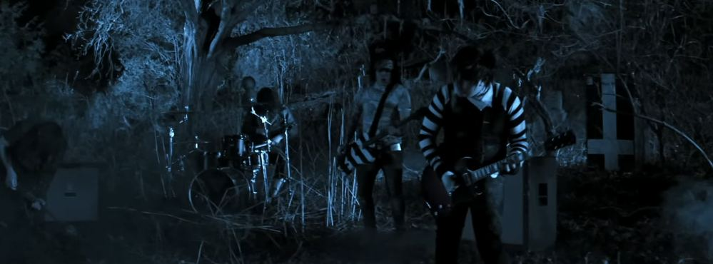
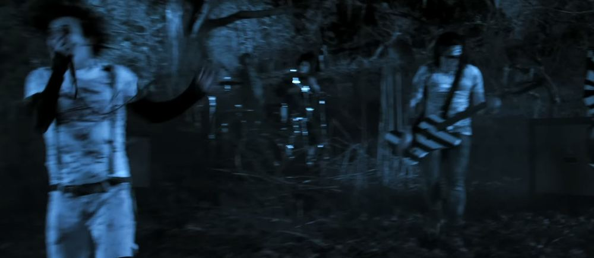

there is a room in the backrooms where a forest grew through the floor.
nobody planted it. nobody watered it. the fluorescent lights broke and something else grew in their place.
the trees are not trees. they are the shapes that grief makes when it has nowhere else to go.

a band set up in the clearing.
drums in the mud. guitars strung with something that isn't wire. a vocalist screaming into a microphone connected to nothing.
they play one song.
the same song.
every night.
they don't know they're dead. they think it's still the show. they think the audience is just very quiet.

the audience is the backrooms.
the walls listen. the carpet absorbs the bass. the fluorescent lights that used to be here flicker in time with the drums even though they've been dead for years.
we sleep forever
that's what the vocalist screams. over and over. and the trees grow a little taller every time he says it. because the trees are made of the same thing the song is made of.
the refusal to stop performing after the show is over.
traveler wanderer-7 reported hearing music from behind a wall on level 4. upon investigation, the wall was not a wall. it was bark.
the forest extends approximately 200 meters in every direction. there is no ceiling. the sky above the trees is the underside of level 3's carpet.
the band has been playing continuously since the room was discovered. they do not acknowledge travelers. they do not eat. they do not stop.
the vocalist's microphone is connected to the radio network. every transmission on 89.6 FM has this song playing underneath it at very low volume. we do not know how long this has been happening.
one traveler applauded after the song ended. the song did not end. it restarted. the traveler is now part of the audience. the audience is the carpet. the carpet is the floor of level 3.